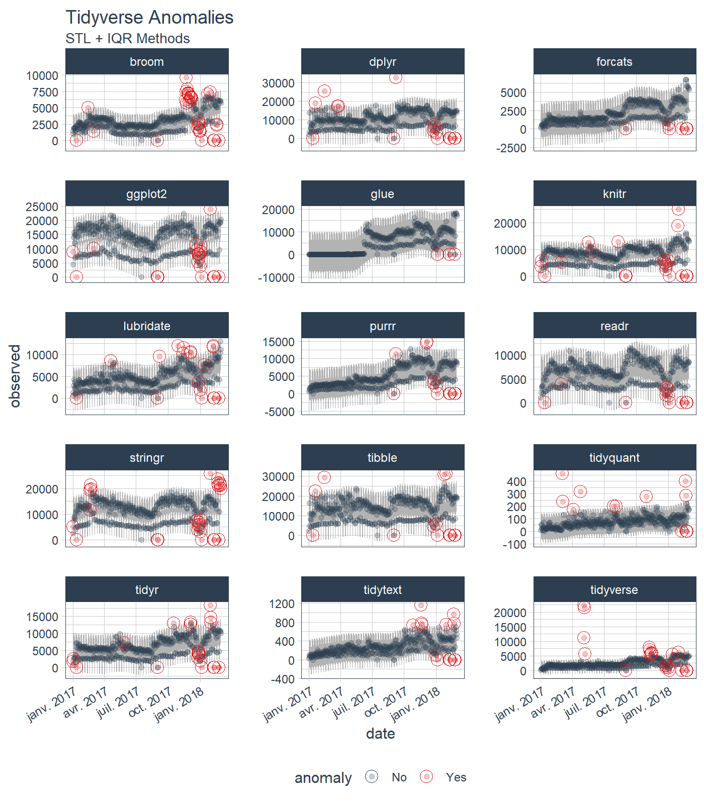
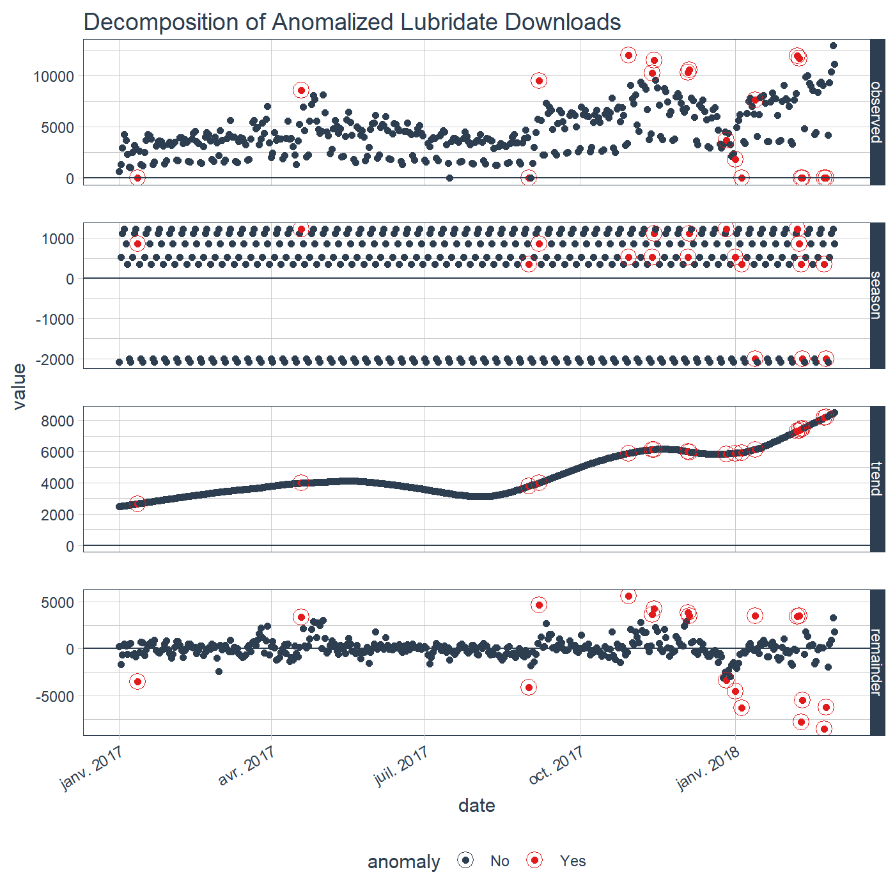

anomalize 
The anomalize package functionality has been superceded by timetk. We suggest you begin to use the timetk::anomalize() to benefit from enhanced functionality to get improvements going forward. Learn more about Anomaly Detection with timetk here.
The original anomalize package functionality will be maintained for previous code bases that use the legacy functionality.
To prevent the new timetk functionality from conflicting with old anomalize code, use these lines:
library(anomalize)
anomalize <- anomalize::anomalize
plot_anomalies <- anomalize::plot_anomaliesTidy anomaly detection
anomalize enables a tidy workflow for detecting anomalies in data. The main functions are time_decompose(), anomalize(), and time_recompose(). When combined, it’s quite simple to decompose time series, detect anomalies, and create bands separating the “normal” data from the anomalous data.

Installation
You can install the development version with devtools or the most recent CRAN version with install.packages():
# devtools::install_github("business-science/anomalize")
install.packages("anomalize")How It Works
anomalize has three main functions:
-
time_decompose(): Separates the time series into seasonal, trend, and remainder components -
anomalize(): Applies anomaly detection methods to the remainder component. -
time_recompose(): Calculates limits that separate the “normal” data from the anomalies!
Getting Started
Load the tidyverse and anomalize packages.
library(tidyverse)
library(anomalize)
# NOTE: timetk now has anomaly detection built in, which
# will get the new functionality going forward.
# Use this script to prevent overwriting legacy anomalize:
anomalize <- anomalize::anomalize
plot_anomalies <- anomalize::plot_anomaliesNext, let’s get some data. anomalize ships with a data set called tidyverse_cran_downloads that contains the daily CRAN download counts for 15 “tidy” packages from 2017-01-01 to 2018-03-01.
Suppose we want to determine which daily download “counts” are anomalous. It’s as easy as using the three main functions (time_decompose(), anomalize(), and time_recompose()) along with a visualization function, plot_anomalies().
library(magrittr)
tidyverse_cran_downloads %>%
# Data Manipulation / Anomaly Detection
time_decompose(count, method = "stl") %>%
anomalize(remainder, method = "iqr") %>%
time_recompose() %>%
# Anomaly Visualization
plot_anomalies(time_recomposed = TRUE, ncol = 3, alpha_dots = 0.25) +
ggplot2::labs(title = "Tidyverse Anomalies", subtitle = "STL + IQR Methods") 
Check out the anomalize Quick Start Guide.
Reducing Forecast Error by 32%
Yes! Anomalize has a new function, clean_anomalies(), that can be used to repair time series prior to forecasting. We have a brand new vignette - Reduce Forecast Error (by 32%) with Cleaned Anomalies.
tidyverse_cran_downloads %>%
dplyr::filter(package == "lubridate") %>%
dplyr::ungroup() %>%
time_decompose(count) %>%
anomalize(remainder) %>%
# New function that cleans & repairs anomalies!
clean_anomalies() %>%
dplyr::select(date, anomaly, observed, observed_cleaned) %>%
dplyr::filter(anomaly == "Yes")
#> # A time tibble: 19 × 4
#> # Index: date
#> date anomaly observed observed_cleaned
#> <date> <chr> <dbl> <dbl>
#> 1 2017-01-12 Yes -1.14e-13 3522.
#> 2 2017-04-19 Yes 8.55e+ 3 5202.
#> 3 2017-09-01 Yes 3.98e-13 4137.
#> 4 2017-09-07 Yes 9.49e+ 3 4871.
#> 5 2017-10-30 Yes 1.20e+ 4 6413.
#> 6 2017-11-13 Yes 1.03e+ 4 6641.
#> 7 2017-11-14 Yes 1.15e+ 4 7250.
#> 8 2017-12-04 Yes 1.03e+ 4 6519.
#> 9 2017-12-05 Yes 1.06e+ 4 7099.
#> 10 2017-12-27 Yes 3.69e+ 3 7073.
#> 11 2018-01-01 Yes 1.87e+ 3 6418.
#> 12 2018-01-05 Yes -5.68e-14 6293.
#> 13 2018-01-13 Yes 7.64e+ 3 4141.
#> 14 2018-02-07 Yes 1.19e+ 4 8539.
#> 15 2018-02-08 Yes 1.17e+ 4 8237.
#> 16 2018-02-09 Yes -5.68e-14 7780.
#> 17 2018-02-10 Yes 0 5478.
#> 18 2018-02-23 Yes -5.68e-14 8519.
#> 19 2018-02-24 Yes 0 6218.But Wait, There’s More!
There are a several extra capabilities:
-
plot_anomaly_decomposition()for visualizing the inner workings of how algorithm detects anomalies in the “remainder”.
tidyverse_cran_downloads %>%
dplyr::filter(package == "lubridate") %>%
dplyr::ungroup() %>%
time_decompose(count) %>%
anomalize(remainder) %>%
plot_anomaly_decomposition() +
ggplot2::labs(title = "Decomposition of Anomalized Lubridate Downloads")
For more information on the anomalize methods and the inner workings, please see “Anomalize Methods” Vignette.
References
Several other packages were instrumental in developing anomaly detection methods used in anomalize:
- Twitter’s
AnomalyDetection, which implements decomposition using median spans and the Generalized Extreme Studentized Deviation (GESD) test for anomalies. -
forecast::tsoutliers()function, which implements the IQR method.
Interested in Learning Anomaly Detection?
Business Science offers two 1-hour courses on Anomaly Detection:
Learning Lab 18 - Time Series Anomaly Detection with
anomalizeLearning Lab 17 - Anomaly Detection with
H2OMachine Learning